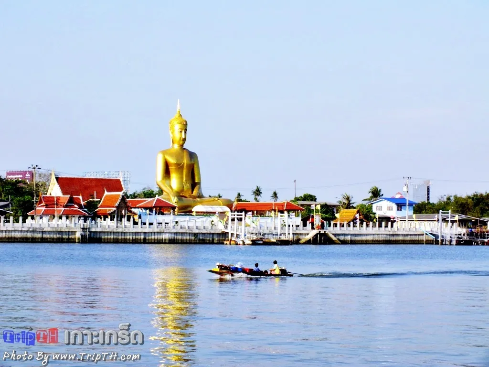

วัด · ท่าเรือ
วัดสนามเหนือ
จุดตั้งต้นของทริปนี้ อยู่ฝั่งปากเกร็ดก่อนข้ามเรือ จอดรถได้ ไหว้พระได้ แล้วเดินไปลงเรือที่ท่าของวัดต่อได้เลย

สรุปให้ก่อน
- ค่าเข้า
- ไม่เสียค่าเข้าวัดถ้าเอารถมาจอดช่วงวันหยุด มีค่าจอดราว 30 บาท ตามที่ผู้ไปเยือนรีวิวไว้
- เวลาเปิด
- ทุกวัน ราว 06:30–21:00เรือข้ามฟากที่ท่าวัดให้บริการราว 05:00–21:30 วันอาทิตย์ถึง 21:00
- พิกัด
- 24 หมู่ 3 ถ.แจ้งวัฒนะ ต.ปากเกร็ด อ.ปากเกร็ด นนทบุรี 11120GPS โดยประมาณ 13.910, 100.498 — อยู่ฝั่งแผ่นดินใหญ่ ไม่ได้อยู่บนเกาะ
- ควรไปตอนไหน
- เช้าถึงบ่าย 08:00–16:00เสาร์–อาทิตย์และวันหยุดนักขัตฤกษ์คึกคักกว่า ร้านค้าเปิดมากกว่าวันธรรมดา
คนส่วนใหญ่รู้จักวัดสนามเหนือในฐานะ "ท่าเรือ" มากกว่าในฐานะวัด เพราะเป็นจุดที่คนข้ามไปเกาะเกร็ดกันมากที่สุด แต่ถ้ามาถึงเร็วกว่านัดหรือรอเพื่อนอยู่ ที่นี่มีอะไรให้ทำมากกว่าที่คิด
ทำไมต้องแวะ
วัดสนามเหนือเป็นวัดเก่าแก่ริมแม่น้ำเจ้าพระยาในอำเภอปากเกร็ด ตัววัดอยู่ติดน้ำ จึงมีบริเวณริมน้ำให้นั่งพักและมองเรือผ่านไปมาได้ ไหว้พระให้เรียบร้อยก่อนแล้วค่อยเดินไปที่ท่าเรือของวัดก็ทัน
- ไหว้พระในพระอุโบสถก่อนออกเดินทาง
- ลานริมน้ำสำหรับนั่งพักและชมวิวแม่น้ำ
- ช่วงวันหยุดมีตลาดที่ชาวบ้านเอาสินค้าและอาหารมาขาย
- ท่าเรือข้ามฟากไปเกาะเกร็ดอยู่ในวัดเลย ไม่ต้องย้ายที่จอดรถ
ข้ามไปเกาะเกร็ดจากตรงนี้ยังไง
จอดรถไว้ที่วัด แล้วเดินไปที่ท่าเรือของวัดเพื่อนั่งเรือข้ามฟากไปลงที่ท่าวัดปรมัยยิกาวาสบนเกาะ ใช้เวลาไม่กี่นาที ข้อมูลของการท่องเที่ยวแห่งประเทศไทยระบุว่าเรือเส้นทางนี้ให้บริการราว 05:00–21:30 น. (วันอาทิตย์ถึง 21:00 น.) ค่าโดยสารช่วงกลางวันราว 3 บาทต่อคน
เตรียมเหรียญกับแบงก์ย่อยไปด้วย
ทั้งค่าจอดรถและค่าเรือจ่ายเป็นเงินสด ค่าเรือหลักหน่วยแบบนี้ยื่นแบงก์ใหญ่ไปจะทอนยาก
ไปต่อจากตรงนี้
ลงเรือแล้วขึ้นฝั่งที่ท่าวัดปรมัยยิกาวาส ซึ่งเป็นจุดแรกบนเกาะพอดี เดินต่อไปเจดีย์เอียงมุเตาแล้ววนไปตลาดริมน้ำได้ในวันเดียว ขากลับใช้ท่าเดิม อย่าลืมเช็กเวลาเรือเที่ยวสุดท้ายก่อนเดินไปไกล